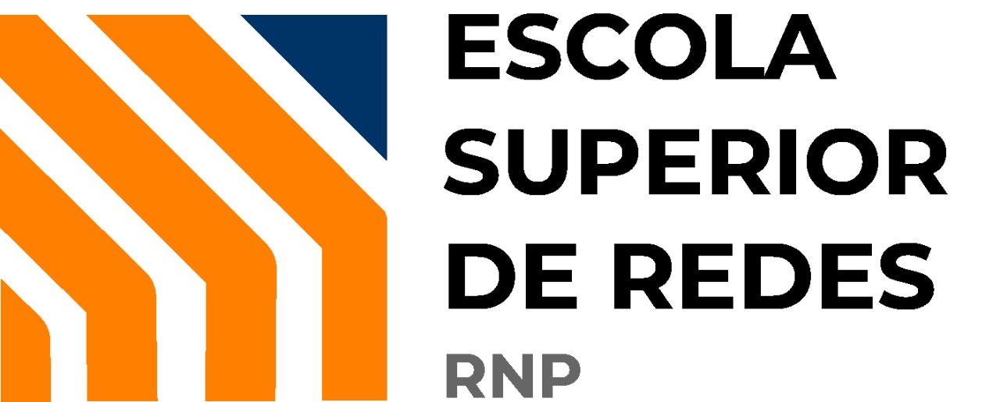
Sessão 9: Resolução de problemas no Kubernetes
1) Monitoramento via k9s
O k9s (https://github.com/derailed/k9s) é um programa baseado em linha de comando bastante útil para monitorar a utilização de recursos e estado geral de um cluster Kubernetes, sendo uma espécie de substituto leve para o Kubernetes Dashboard. Nesta atividade, iremos aprender como instalar e operar o k9s.
-
O k9s pode ser operado localmente na máquina de um administrador do cluster Kubernetes ou a partir de um servidor. Por ser uma aplicação com maior enfoque em praticidade e agilidade, iremos utilizar a primeira abordagem.
Seguindo as instruções em https://github.com/derailed/k9s#installation, faça a instalação do k9s na máquina s2-master-1 e verifique seu funcionamento.
Visualizar resposta
As instruções, felizmente, são bastante simples. Primeiro, acesse a VM
s2-master-1como o usuárioroot:# hostname ; whoami s2-master-1 root
Agora, instale o k9s.
# wget https://github.com/derailed/k9s/releases/download/v0.27.4/k9s_Linux_amd64.tar.gz && tar zxf k9s_Linux_amd64.tar.gz && mv k9s /usr/local/bin && rm -f k9s_Linux_amd64.tar.gz
Depois, execute-o:
# k9s
Você verá uma janela semelhante à mostrada abaixo:
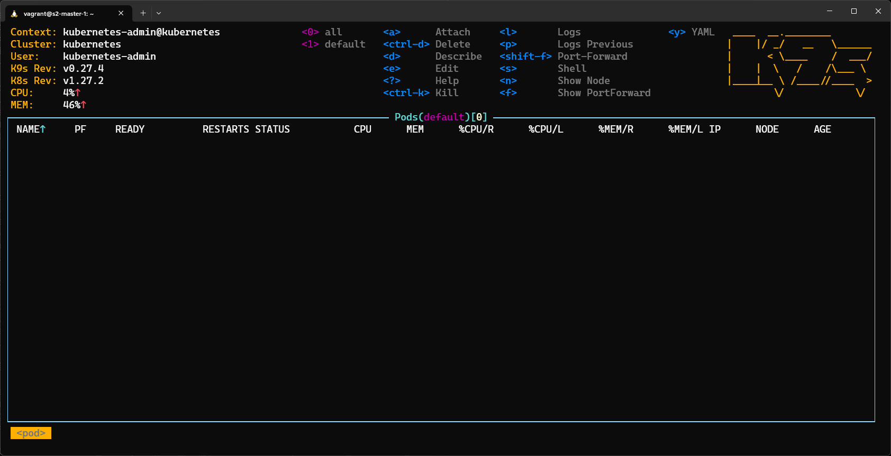Figura 1. k9s operacional -
Com o k9s, você pode visualizar uma série de informações detalhadas sobre seu cluster, incluindo recursos de CPU, memória, rede e disco. Além disso, ele permite que você visualize e gerencie uma variedade de recursos do Kubernetes diretamente na interface do usuário.
Explore a interface do k9s e familiarize-se com suas funcionalidades. Utilize o atalho
?para mostrar as opções disponíveis em cada uma das telas da ferramenta.Utilize o atalho
:nspara alterar o namespace atual parakube-system. Em seguida, descubra e utilize os atalhos para visualizar a descrição, logs e arquivo YAML que descreve um dos pods desse namespace.Visualizar resposta
Os atalhos a serem utilizados para realizar os objetivos selecionados são, respectivamente,
d,ley. Adicionalmente, pode-se utilizar o atalhoepara editar in-place o arquivo YAML que descreve um objeto selecionado na interface do k9s.Abaixo, mostra-se a tela de descrição do pod
kube-apiserver-s2-master-1: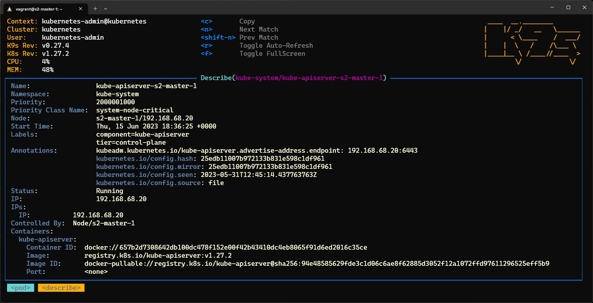Figura 2. Visualização da descrição de containers -
Como podemos visualizar todos os DaemonSets em atividade no cluster? Como mostrar os pods de um DaemonSet em específico, como o
kube-proxy?Em seguida, execute um shell em um desses pods e exiba o diretório corrente.
Visualizar resposta
Para selecionar todos os namespaces do cluster digite o atalho
0. Em seguida, para mostrar os recursos do tipo DaemonSet, digite:dscomo mostrado abaixo.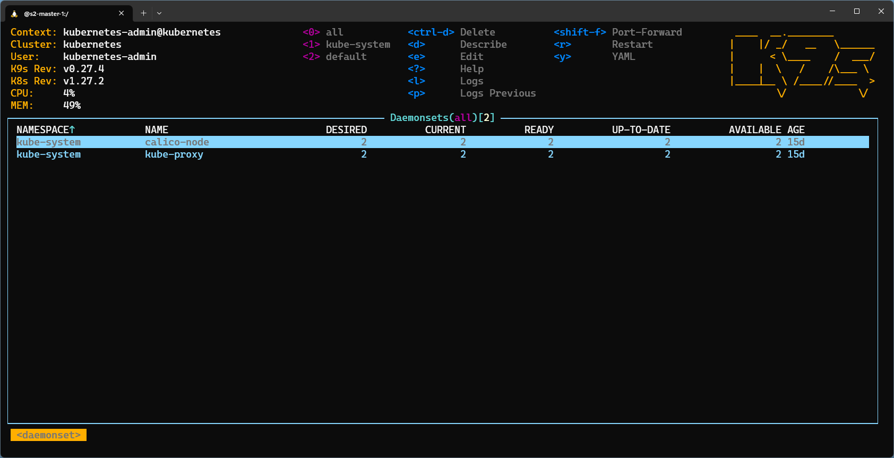Figura 3. Visualizando os DaemonSets do clusterSelecione o
kube-proxynessa lista e aperteEnter. Os pods daquele DaemonSet serão mostrados.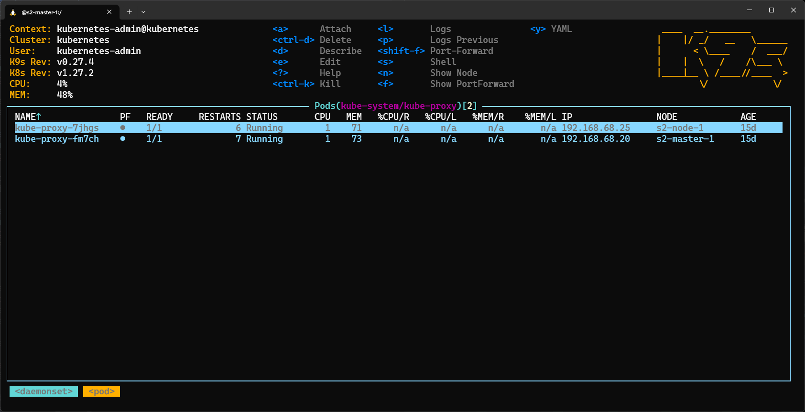Figura 4. Mostrando a lista de pods de um DaemonSet em específicoEscolha um dos pods e digite
spara executar um shell interativo. Finalmente, digite o comandopwdpara completar o objetivo da atividade.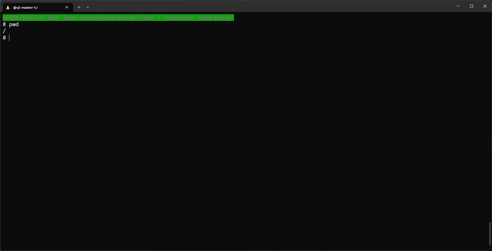Figura 5. Executando um shell interativo em um pod
2) Monitoramento via Grafana e Loki
Em ambientes de maior porte, soluções como k9s ou o Kubernetes Dashboard (https://kubernetes.io/docs/tasks/access-application-cluster/web-ui-dashboard/) mostram-se insuficientes, pois o número de usuários, deployments e recursos a serem gerenciados crescem exponencialmente.
Nesses casos, soluções de observabilidade para o cluster Kubernetes tornam-se indispensáveis. Dentre as diversas disponíveis, o Prometheus (https://prometheus.io/) juntamente com o componente gráfico Grafana (https://grafana.com/), são as mais populares para este fim.
Nesta atividade, iremos aprender como instalar e monitorar um cluster Kubernetes usando a stack Prometheus + Grafana + Loki. Para facilitar enormemente a tarefa de instalação de configuração, iremos utilizar o Helm (https://helm.sh/) no processo.
-
Faça a instalação do Helm CLI na máquina
s2-master-1, seguindo as instruções oficiais em https://helm.sh/docs/intro/install/ .Visualizar resposta
A instalação pode ser feita em um único comando:
# curl https://raw.githubusercontent.com/helm/helm/main/scripts/get-helm-3 | bash
Fácil, não é mesmo?
-
Agora, crie o namespace
grafana.Em seguida, configure a persistência de dados para que o
prometheus-servere oprometheus-alertmanagerconsigam armazenar registros a longo prazo. Para tanto, refaça os passos realizados na atividade 7.3.2 (b) deste curso, mas desta vez configurando a instalação dos recursos namespace-bound para o namespacegrafanaem vez dodefault.Visualizar resposta
Primeiro iremos criar o namespace solicitado.
# kubectl create ns grafana namespace/grafana created
A seguir, vamos configurar a persistência de dados usando o
nfs-subdir-external-provisionerde forma análoga ao que foi feito anteriormente no módulo 7. Para conveniência, todos os comandos foram consolidados em um único one-liner.# curl -s https://raw.githubusercontent.com/kubernetes-sigs/nfs-subdir-external-provisioner/master/deploy/rbac.yaml | \ sed 's/\(namespace: \).*/\1grafana/' | \ kubectl apply -f - && curl -s https://raw.githubusercontent.com/kubernetes-sigs/nfs-subdir-external-provisioner/master/deploy/class.yaml | \ sed 's/^\(provisioner:\).*/\1 nfs.contorq.com/' | \ kubectl apply -f - && curl -s https://raw.githubusercontent.com/kubernetes-sigs/nfs-subdir-external-provisioner/master/deploy/deployment.yaml | \ sed '/PROVISIONER_NAME/{n;s/^\([[:space:]]*value:\).*/\1 nfs.contorq.com/;}' | \ sed '/NFS_SERVER/{n;s/^\([[:space:]]*value:\).*/\1 192.168.68.20/;}' | \ sed 's/^\([[:space:]]*server:\).*/\1 192.168.68.20/' | \ sed '/NFS_PATH/{n;s/^\([[:space:]]*value:\).*/\1 \/pods/;}' | \ sed 's/^\([[:space:]]*path:\).*/\1 \/pods/' | \ sed 's/\(namespace: \).*/\1grafana/' | \ kubectl apply -f - -
Em seguida, usando as instruções de instalação do Grafana/Loki via Helm em https://grafana.com/docs/loki/latest/installation/helm/ , faça a instalação da
loki-stack(incluindo o Loki, Promtail, Grafana e Prometheus) no namespacegrafana.Habilite o Grafana e o Prometheus durante a instalação, e também configure o
storageClassa ser utilizado. Use os seguintes valores de variáveis a serem passadas ao comando Helm:-
grafana.enabled=true -
prometheus.enabled=true -
prometheus.alertmanager.persistentVolume.storageClass=nfs-client -
prometheus.server.persistentVolume.storageClass=nfs-clientVisualizar resposta
Comece adicionando o repositório de charts do Grafana ao Helm e atualizando a lista de charts disponíveis.
# helm repo add grafana https://grafana.github.io/helm-charts && helm repo update
Usando o
helm, iremos agora instalar aloki-stack(incluindo o Loki, Promtail, Grafana e Prometheus) no namespacegrafana:# helm upgrade --namespace grafana --install loki grafana/loki-stack --set grafana.enabled=true,prometheus.enabled=true,prometheus.alertmanager.persistentVolume.storageClass=nfs-client,prometheus.server.persistentVolume.storageClass=nfs-client Release "loki" does not exist. Installing it now. NAME: loki LAST DEPLOYED: Fri Jun 16 00:44:14 2023 NAMESPACE: grafana STATUS: deployed REVISION: 1 NOTES: The Loki stack has been deployed to your cluster. Loki can now be added as a datasource in Grafana. See http://docs.grafana.org/features/datasources/loki/ for more detail.
Após algum tempo, todos os pods referentes aos deployments e DaemonSets criados pelo Helm chart devem ficar disponíveis.
# kubectl -n grafana get pod NAME READY STATUS RESTARTS AGE loki-0 1/1 Running 0 18m loki-grafana-849c998c5b-dmtzm 2/2 Running 0 18m loki-kube-state-metrics-5ccf987654-w6pbp 1/1 Running 0 18m loki-prometheus-alertmanager-5ccf78499f-w96gc 2/2 Running 0 18m loki-prometheus-node-exporter-k5r4t 1/1 Running 0 18m loki-prometheus-pushgateway-7d977f4ff9-g56bv 1/1 Running 0 18m loki-prometheus-server-75468d596d-dwgw5 2/2 Running 0 18m loki-promtail-j4hrn 1/1 Running 0 18m loki-promtail-zmzx8 1/1 Running 0 18m nfs-client-provisioner-bb5966f6b-p5vhs 1/1 Running 0 19m
-
-
O próximo passo consiste em acessar a interface web do Grafana.
Primeiro, disponibilize o serviço
loki-grafana-nodeport, expondo a porta80(targetPort3000) dos pods do deploymentloki-grafanaexternamente através da porta30080em qualquer dos membros do cluster. Você pode utilizar o serviço preexistenteloki-grafanacomo referência para este fim.Alternativamente, utilize o recurso de proxy do comando
kubectl, se preferir.Para verificar o funcionamento de sua configuração, acesse a interface web do Grafana através de seu navegador.
Finalmente, obtenha a senha do usuário
adminseguindo os passos em https://grafana.com/docs/loki/latest/installation/helm/#deploy-grafana-to-your-cluster , e faça login na interface do Grafana.Visualizar resposta
Primeiro, vamos criar o serviço solicitado. Crie um arquivo YAML com o seguinte conteúdo:
1 2 3 4 5 6 7 8 9 10 11 12 13 14 15 16 17 18
apiVersion: v1 kind: Service metadata: namespace: grafana labels: app: loki-grafana-nodeport name: loki-grafana-nodeport spec: ports: - name: "80" nodePort: 30080 port: 80 protocol: TCP targetPort: 3000 selector: app.kubernetes.io/instance: loki app.kubernetes.io/name: grafana type: NodePort
A seguir, aplique-o ao cluster:
# kubectl apply -f loki-grafana-nodeport.yaml service/loki-grafana-nodeport created
Para obter a senha do usuário
adminna interface web do Grafana, basta executar o comando abaixo.# kubectl get secret --namespace grafana loki-grafana -o jsonpath="{.data.admin-password}" | base64 --decode ; echo ADMIN_PASSWORD_HEREVamos ver se funcionou? Em sua máquina física, acesse a URL http://192.168.68.20:30080/ usando o navegador.
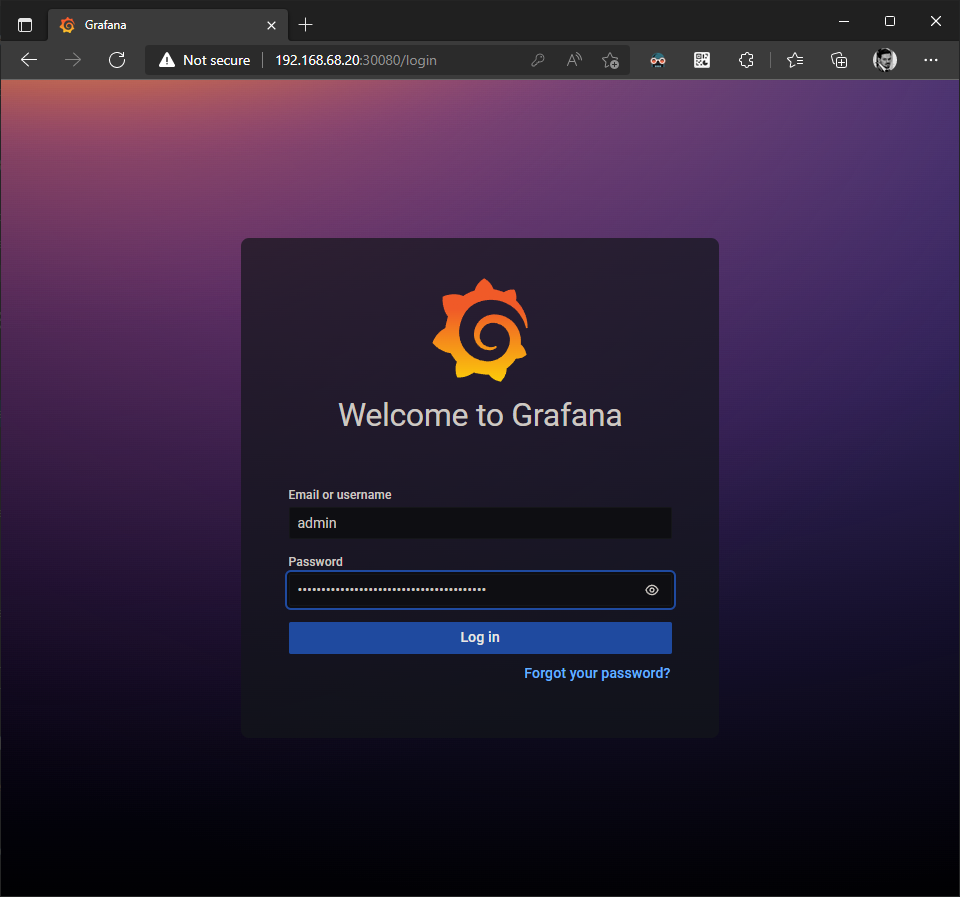Figura 6. Login na interface web do GrafanaAgora, tente o login com o usuário
admine a senha obtida anteriormente. Você deverá ver a tela de boas-vindas do Grafana, como mostrado abaixo.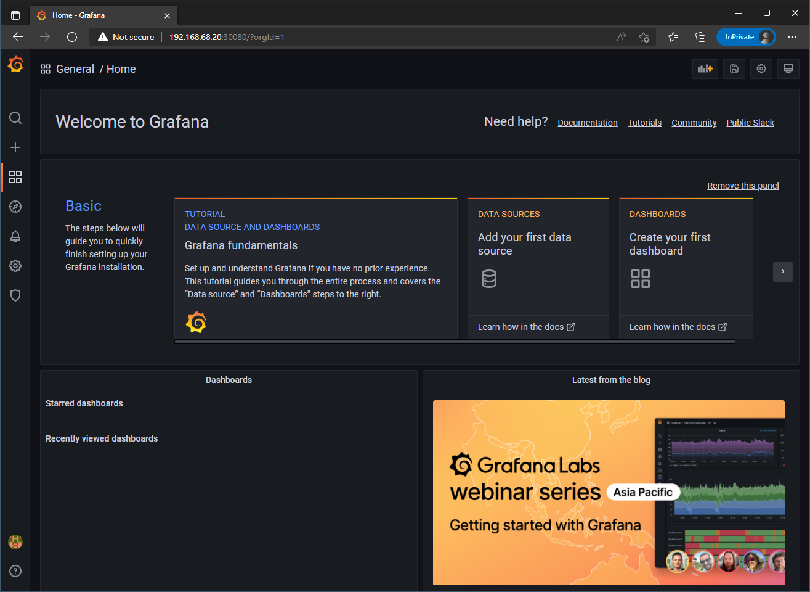Figura 7. Login realizado com sucesso -
Iremos verificar as fontes de dados do Grafana, especificamente o Loki e Prometheus.
Veja as instruções em https://grafana.com/docs/loki/latest/getting-started/grafana/ : elas mostram como seria possível adicionar o Loki como uma fonte de dados (data source) ao Grafana.
Agora, acesse Configuration > Data sources, e responda: quais fontes de dados estão disponíveis? Teste cada uma delas para validar seu funcionamento.
Visualizar resposta
Acessando Configuration > Data sources, nos deparamos com a seguinte janela:
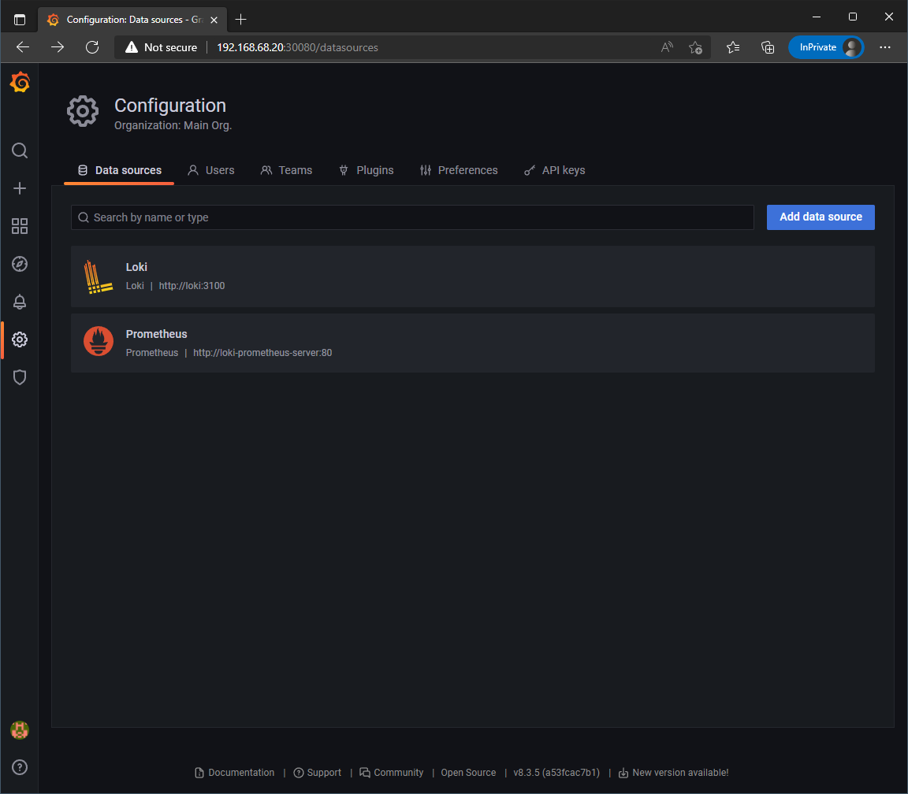Figura 8. Fontes de dados pré-adicionadas durante a instalação do HelmComo visto acima, tanto o Loki quanto o Prometheus já foram adicionados como data sources ao Grafana durante a instalação do Helm chart.
Para testá-los, simplesmente selecione um deles e, na base da tela, clique em Test. Você deverá ver a mensagem Data source connected and labels found, no caso do Loki, e Data source is working, para o Prometheus.
-
Finalmente, iremos adicionar dashboards ao Grafana.
No marketplace https://grafana.com/grafana/dashboards/ é possível encontrar diversos dashboards feitos pela comunidade de usuários da ferramenta, o que facilita enormemente o processo de configuração do Grafana para sua organização.
Acesse Create > Import e adicione os dashboards com IDs
3119e6417. Depois, responda: que informações interessantes são mostradas por esses dashboards? Que outros tipos de dashboards poderíamos adicionar ao Grafana para incrementar sua funcionalidade?Visualizar resposta
A importação de dashboards pode ser feita de forma extremamente conveniente no Grafana. Simplesmente acesse o menu Create > Import à esquerda, e digite o ID ou URL do dashboard desejado no campo Import via grafana.com. Em seguida, clique em Load.
Abaixo, vemos a importação do dashboard com ID
3119: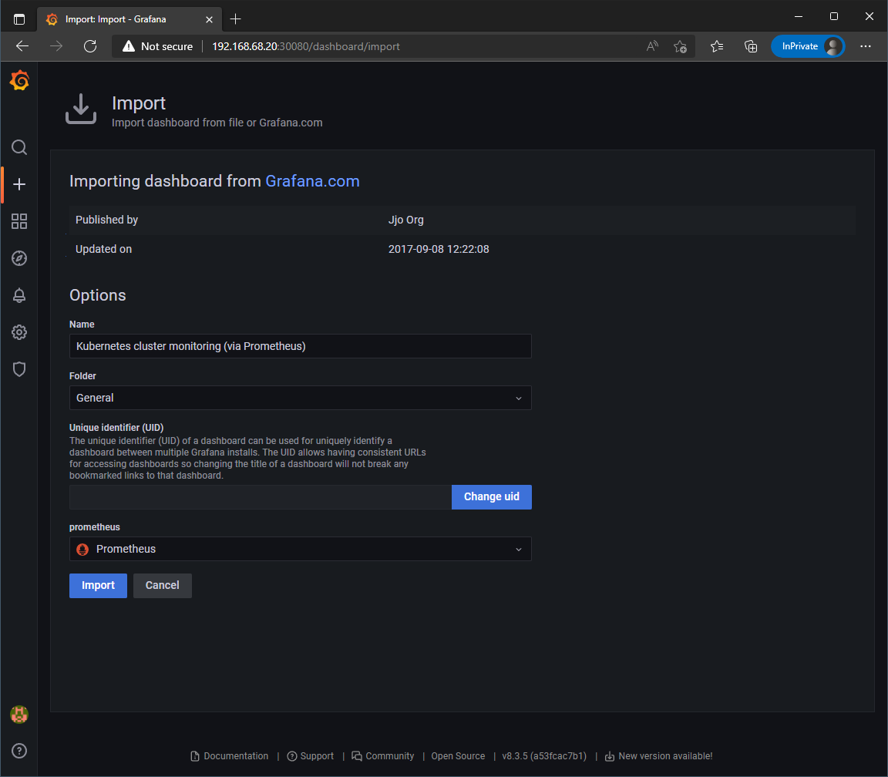Figura 9. Importação do dashboard Kubernetes cluster monitoringNo campo prometheus, aponte o data source do tipo Prometheus visualizado no item anterior desta atividade. Finalmente, clique em Import.
Voce será levado ao dashboard completo, já com agregação de dados e gráficos à disposição:
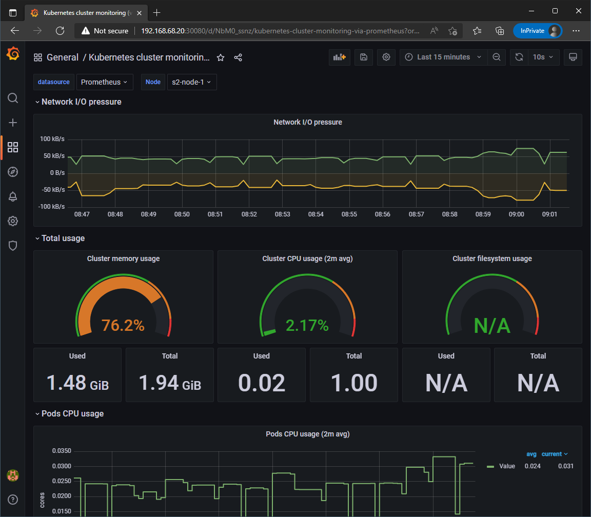Figura 10. Visualização do dashboard Kubernetes cluster monitoringFaça o mesmo para o dashboard com ID
6417. Seu conteúdo é mostrado abaixo.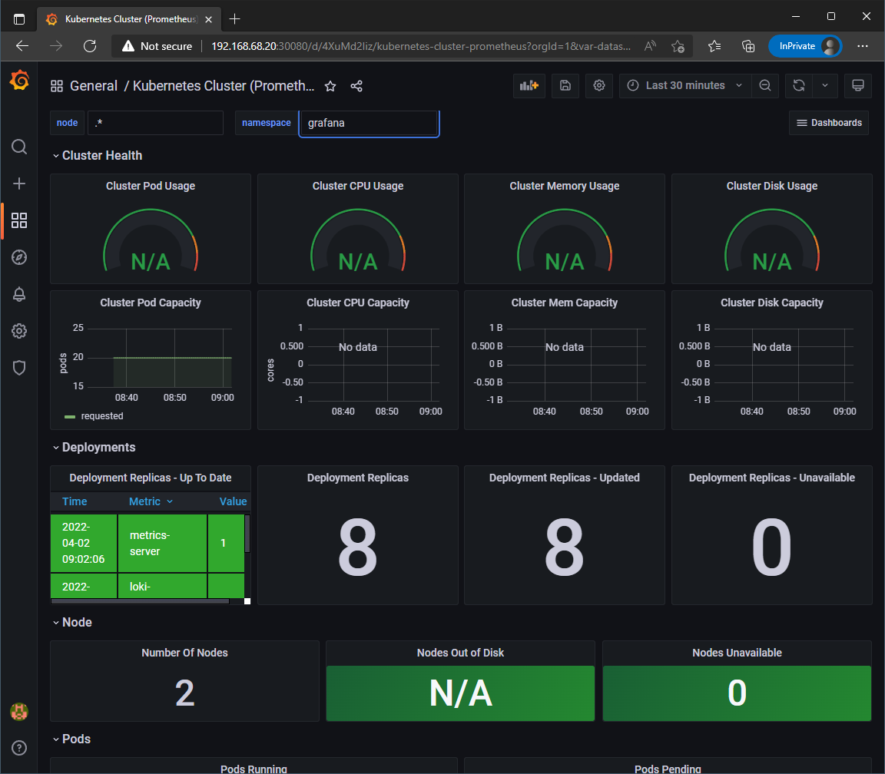Figura 11. Visualização do dashboard Kubernetes Cluster (Prometheus)Este segundo dashboard oferece de filtrar não apenas por nome do nó (node name), mas também por namespace, o que pode ser conveniente em ambientes de maior porte.
O Grafana pode ser utilizado para diversas outras funções de monitoramento e observabilidade além de simplesmente visualizar o cluster Kubernetes em si. Considere, por exemplo, estes dashboards focados no monitoramento do Nginx ingress controller, Apache Kafka exporter ou Istio service mesh. Além destes, há diversos outros focados em aplicações ou softwares específicos — vale pesquisar bastante antes de fazer o seu próprio dashboard "do zero"!
|
ENTREGA DA TAREFA Para que seja considerada entregue você deve anexar a esta atividade no AVA uma imagem (nos formatos .png ou .jpg) do seu navegador acessando o dashboard Kubernetes cluster monitoring (ID Utilize como referência a segunda imagem mostrada na atividade 9.2 (e) deste roteiro. |